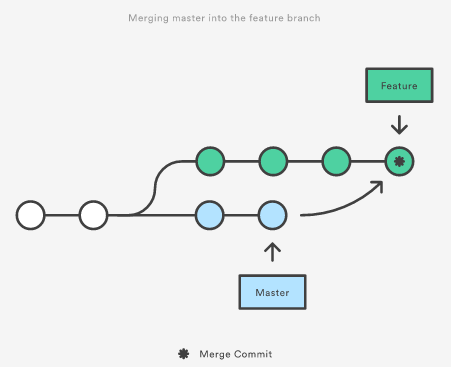
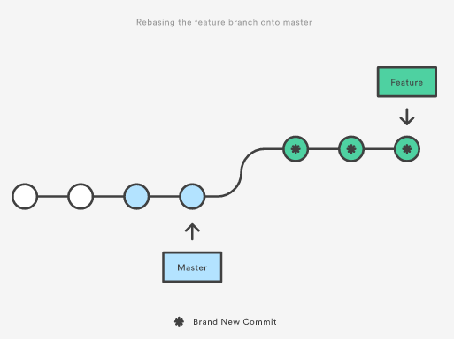

Basics
Intermediate
Advanced
Miscellaneous Information
GitHub is a Git repository hosting service, but it adds many of its own features. While Git is a version control command line tool, GitHub provides a Web-based graphical interface. It also provides access control and several collaboration features, such as a wikis and basic task management tools for every project. Some of the features provided by GitHub include creating Branches and Forks, which will be covered later in the tutorial.
For starters, GitHub is used at MCLA by the Computer Science Dept to easily distribute class examples and view student assignments. More specifically, some Professors may have you "clone" a class repository to retrieve examples that they are providing for you, and may also require that you upload your homework assignments to GitHub for them to view and grade.
Outside of use at MCLA, GitHub is also a great tool for version control. Version control allows you to look back at previous versions of your code. For instance, if you did a bunch of work on a project and managed to break more than you were able to fix, you can look back and retrieve and earlier version that was working properly before you made some of those changes. Furthermore, GitHub is also greatly used in the Software Development industry. Having prior experience and knowledge of GitHub and how to properly use a variety of its features is a marketable skill that could be included on a resume.


Windows: To install Git for Windows Click Here.
Follow the setup to finish the installation with the pre-selected settings. Once the install is complete, you will be able to find Git in your programs and either launch it with the Git Bash, or Git CMD (this uses Windows Command Prompt). Either option you choose will use the same Git commands used in this tutorial. You will notice there is an option for Git GUI, this is a nice tool but it is very important to understand how to use Git without the GUI before deciding to use this tool. This is important so you will know how to use Git even when you do not have access to Git GUI.
Linux: To install Git on Linux, run the command shown in a terminal window.
Git will install automatically, nothing further is needed for installation.
MacOSX: To install Git on MacOSX, run the command shown in a terminal window.
If Git is not already installed, you will then be asked if you would like to install git. Select yes, and git will install onto your system.
Configuration: Once you have Git installed, the first thing you should do is configure it to your identity.
Every Git commit you make uses this information, so it is important that you set this up. Simply run the commands shown in the terminal window, and you will be all set and ready to go. If you would like to use a different identity from your global configuration you can run the same commands without the "--global" tag in which ever project you are in. This will not overwrite your global settings unless you include the "--global" tag.
Create a Repository: Creating a Repository is done on the GitHub website.
To get your GitHub Repository URL, simply log into GitHub and click on the repository you would like to clone. On that page you will find a green button that reads "Clone or Download", click that button and copy the URL displayed.
Clone a Repository: Once you have your GitHub Repository URL, run the command shown in the terminal window.
To get your GitHub Repository URL, simply log into GitHub and click on the repository you would like to clone. On that page you will find a green button that reads "Clone or Download", click that button and copy the URL displayed.
Add Changed Files to Staging Area: Make sure all files are saved after making changes.
There are a few ways to do this, the command provided (or 'git add -a') is the simplest way to add ALL changed, deleted, or new files in the Git Repository to the staging area. This is great if you want to commit all changes made. You can also add files individually to the staging area using (git add "file name"), you can add more than one file at a time by separating the file names by a space.
Commit to Local Repository: It is suggested to add a commit message reflecting the changes made.
This will update your Local Repository with all the changes added to the Staging Area
Push to Remote Repository: You will be prompted to enter your Git Email and Password.
This will push all the changes in your Local Repository to your Remote Repository, updating your files on GitHub.
Check File States: There are multiple status commands that may provide greater detail if desired, look at the provided Reference Book.
The basic status command is provided, this will display information regarding what files have been changed and what state the files are currently in. The state of the files reference whether or not they have been staged, commited, or pushed. If all changes have been pushed to your Remote Repository then not files will be displayed as everything is currently up to date.
Pull from Remote Repository: Be sure to Pull from your Remote Repository before beginning any new work on your project.
This will Pull the current state of your project down from your Remote Repository to your Local Repository.
Creating and Switching Branches: You should always switch to Master branch, and do a pull before creating a branch!
There are two ways to do this. You can do the steps individually by first creating the branch and then switching to that branch, or you can use the shortcut command that will do both at the same time. Branch names should reflect the task you are working on with that branch, common practice in industry is using the assigned task ID.
Viewing Branches:
It is always helpful to view your branches, especially if you are working on multiple tasks on different branches. The branch your HEAD is currently pointing too will have an asterisk and be a different color.
Deleting a Branch:
You should know how to delete a branch whether you made a spelling mistake on the branch name, or simply want to clear out branches that are no longer needed. One thing to keep in mind is that you cannot delete the branch that your HEAD is currently pointing to.
Push Branch to Remote Repository: This will push your Branch directly to GitHub.
This is one way to commit changes in your Branch to GitHub and to merge it into Master. When you use this command, you will then have to visit GitHub and submit a Pull Request to merge your Branch into Master. Here people in the group can review and make suggestions to your code, and then the code can be merged to the Master.
Merge Branch to Master: This will merge changes made on specified Branch to the Master Branch.
First you need to be sure to switch to your Master Branch, and then merge 'Branch Name'. Git will automatically merge your Branch onto the Master Branch as long as there are not merge conflicts.
Push Master after Merge: This is done the same as a normal Push.
After you have merged your Branch onto the Master Branch succesfully, all that is left is to Push your Master up to GitHub.
Merge Conflict: Merge conflicts happen, especially if multiple people are working on the same project.
A merge conflict occurs when you try to merge two branches that changed the same lines of code. When there is a merge conflict, it will show in the terminal what file(s) it is in. From there look for these identifiers as shown below. This shows which two versions of changes are conflicting with each other. To fix this, simply delete the <<, >>, and ==, leave the code you would like to keep, save and start the process to Push to GitHub again.
<<<<<<<<<<<<<<<<<<<<<<<<<<<<<< HEAD
Code found above the ==== is version of code found on Master Branch(HEAD AT THE TIME OF BRANCH CREATION).
===================================
Code found below the ==== is version of code submitted on Branch you are trying to merge.
>>>>>>>>>>>>>>>>>>>>>>>>>>>> BRANCH
Creating a Fork: This must done on GitHub.
Locate the project repository you would like to contribute to, click the Fork button in the upper right side of the screen. This creates your Forked Repository, now all that is left to do is to clone that repository and you're good to go.
Check Fork Upstream: By Default you will have to set this up.
After you set up your Fork Upstream, you can run this again to ensure it is set up correctly.
Configure Fork Upstream: This will sync your upstream with the original project repository.
If you do not perform this step, you will not be able to pull the most current project code from GitHub, or be able to submit a Pull Request to the project owner.
Pull Fork Upstream: Make sure to switch to your master branch before using this command.
This will update your master branch with the most up to date code from the project Fork
Create Pull Request: Request your code be reviewed / merged with Project Master.
This is done on the GitHub website, after you follow the steps to push your changes up to YOUR Forked repository. To push to your Forked Repository, simply follow the steps outlined in previous modals for pushing code.
Next, go to the Original Project Repository, and click on the Pull Requests tab. On the next page, you will find a New Pull Requests button colored in green, click that to begin making your Pull Request. The next page will have the title "Comparing Changes", this is where you will do exactly that, compare the Master to your Branch being submitted. There are two drop down menus just below the page title, one is prefixed with 'base', and the other with 'compare'. The 'base' should always be the project Master, and under 'compare' should be the branch you are requesting to merge. After selecting these two drop downs, you can view the files that have been changed in the project on your branch in comparison to the Master. Click Create Pull Request, the next page allows you to enter a Pull Request Title and a description for what changes you made. After that, simply click Create Pull Request again and you are done.
After the Pull Request is submitted, people may make comments on a few changes they would like to see. In this case you can make the changes to the branch you submitted and just re-push it up to your Forked Repository, the Pull Request will automatically reflect those changes made.
Merging Pull Request: This can only be done by the Project Owner, or those authorized to do so.
This also is done on the GitHub website, once the code has been reviewed and approved, there is a merge button at the bottom of the Pull Request that will automatically merge the Pull Request into the Master. Note: If there are conflicts, these will need to be resolved prior to merging.
Merge Conflicts: You can check for merge conflicts on your Pull Request.
At the bottom of the Pull Request will be a small section in which GitHub displays whether or not the code has conflicts, if it doesn't, GitHub will report that the code can be automatically merged. Otherwise, it will state that there are conflicts and cannot be automatically merged.
These conflicts can be resolved in almost the same manner as they are done with Branches, make sure your Master branch is up to date and then follow the branch merge instructions to merge the Master into your branch. Notice: You are merging the Master TO YOUR Branch, NOT YOUR BRANCH TO YOUR MASTER. This means that your HEAD must be on your branch when you merge the two together.
What & Why with Stash / Pop:
Git Stash/Pop is a tool that you can use to temporarily 'stash' or store changes made on a branch. Say you were doing work on the wrong branch, you just put in and hour or more into a task and then realize you did it all on your Master branch. If only there was a way you could move your changes over to the branch you intended to do all the work on. Well thats one thing Stash/Pop allow you to do, you can 'stash' your changes, switch branches, and then 'pop' your changes off the stack onto that branch. That is just one example as to when this may be handy, but more situations can and will be more easily solved by knowing how to use this simple tool.
Stash: See command in terminal window
Changes are pushed onto a stack, and will stay there until removed from the stack. Keep in mind it is not a good idea to rely on changes being saved in the stack for long periods of time.
Stash List / Show Stash: See commands in terminal window
Stash List is pretty self explanatory, it will list all the stashed commits on the stack.
Stash Show will display the details about the specific stashed commit. If no specific stash is provided, it will show the most recently pushed stash. The '-p' is also optional, but without it you will see less details about that stashed commit.
Stash Pop / Apply: See command in terminal window
Stash Pop is how you apply stashed commit on the stack onto a current branch. If no specific stash is provided, it will use the most recently stashed commit. Note that Git Pop will also remove that commit from the stack.
Stash Apply is essentially the same as Git Pop, but this command will not automatically remove the stashed commit from the stack.
Stash Drop: See command in terminal window
Stash Drop will remove a stashed commit from the stack. If not stash is provided it will remove the most recently stashed commit.
Stash Clear is also a valid option, but this will remove all stashed commits from the stack.
Amend Commit: See command in terminal window
Say you do your commit command, but then realize you want to add another file to this commit. This command allows you to do that. Simply add the file to the staging area and then run this command.
Perhaps you messed up your commit message, and would really like to change it. If you run this command before pushing up your code, you can re-enter your commit message.
Un-Stage a File: See command in terminal window
This allows you to remove a file from the Staging Area. Say you accidently added all changed files to your Staging Area, but then realized that there is a file in that list you do not want to save the changes for. Using this command will allow you to remove that file from your Staging Area and will therefore not be commited.
Revert Modified File: See command in terminal window
Use git status to see unstaged files. If there is a file there that you do not want to save the changes for, using this command will revert the file back to its state in the last commit.
Reset Branch: This alters commit history
This tool is used to move the HEAD to a different commit X. In otherwords, removing or deleting commits and reseting or rewinding a branch to a previous commit. Note, HEAD-x refers to where X = commit to rewind to. If no specific commit is specified to rewind to, it will undo changes on current commit.
There are 3 different kinds of branch reset, --soft, --mixed, and --hard. If none of these are specified, --mixed is the default. A soft reset, resets the branch on the commit-level, but the staged snapshot and working directory are not altered. A mixed reset, resets the branch on the staged-level, but the working directory is not altered. This means that the staged snapshot it made to match the commit you reset the branch to. A hard reset, resets the branch on the working directory-level. This means that all three components of the repository are reset back to the specified commit.
Revert Branch: This does not alter commit history
This tool is used very similarly to Reset. The main and most important difference is that this tool will no rewrite your commit history or delete commits. Revert will rewind to the specified commit, and then create a new commit on the end of the branch with that commits snapshot. Note that you should have a clean working directory prior to using this tool.
Checkout Commit: Much like switching between Branches, but with Commits
This is a great tool to look back at old version of code, all this does is move your HEAD to a certain commit state. Be careful though, as if you start making changes and commits from here you could end up losing your work. If you want to get code from a previous commit to work on, you should consider using Revert, Reset, or creating a whole new branch from that commit instead.
Reset & Checkout on File Level: These can be applied to individual files also
If you add the name of a file at the end of the command, then you will be able to perform a similar action as on commits. Rather than rewinding/viewing a whole commit, you can rewind/view an individual file instead.
Reset on File Level: The soft, mixed, and hard parameters have no effect when working on the file level. When you use Reset on a file, it will take the file state from the specified commit and stage it for the next commit. The working directory will not be updated.
Checkout on File Level: This will revert the file state from the specified commit on the working directory, but will not be staged. This is commonly used with HEAD and not specified commit in order to revert all chanegs done so far on that file.
Viewing Logs: Many options for this command can be found in Reference Book
It can be very beneficial to see what has happened throughout a projects history. By default, with no arguments, this command will list all commits in reverse chronological order in the repository. There are too many options to provide here, but consider adding the -(n) argument, where (n) is the number of commits you would like to see. This will list most recent (n) commits rather than all of them. Press Q to exit.
Git Rebase VS Git Merge: Both are used to integrate changes of two branches together, but differently
Git Merge will take the version of code on your Master branch, and merge it to the end of your feature branch. This avoids the posibility of re-writing public commits, but can provide a messy project history by saving all commits.
Git Rebase will take your Master branch, and merge your feature branch onto the end of it. This keeps a nice linear project history, but if done improperly can result in re-writing public commits.
 
Note:
This is a general overview --Merging VS Rebasing can be complicated, and should be looked into further before using with important projects.